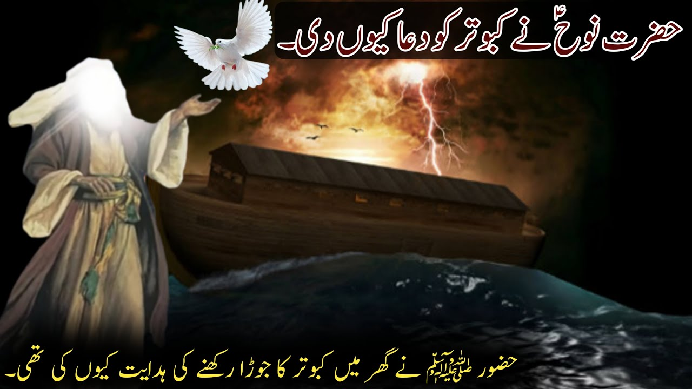

HAZRAT NOOH ALAHE SALAM & PIGEON STORY
- Here's the story of the pigeon and Hazrat Nooh (Noah) as mentioned in the Quran:
Hazrat Nooh (Noah) built an ark to save his family, animals, and believers from the great flood. He released a dove (pigeon) to search for dry land. The dove returned with an olive branch, indicating that the floodwaters had receded. This story is mentioned in Surah Al-Hadid (Verse 27) and Surah Al-Anbiya' (Verse 76-77) in the Quran.
- Here's a brief summary:
- Nooh builds the ark.
- The flood comes.
- Nooh releases a dove to search for land.
- The dove returns with an olive branch.
- Nooh knows the floodwaters have receded.
- The ark lands on Mount Judi.
- This story symbolizes hope, renewal, and the connection between nature and humanity's fate.
- MORE INFO:
- MY C.V
- DAILY ROUTINE
- PERIODIC TABLE
- FORM